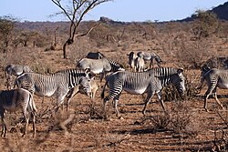

The Grévy's Zebra is the largest and most endangered of the three zebra species.
Scientific Name: Equus grevyi
Common Name: Grévy's Zebra
Habitat: Arid and semi-arid regions of East Africa
Diet: Herbivore (primarily grass)
Conservation Status: Endangered
Grévy's zebra (Equus grevyi) is the largest of the three extant species of zebra.
It is native to the semi-arid grasslands of Ethiopia and northern Kenya.
The species is named after Jules Grévy, a former President of France,
who was presented with a zebra by the Ethiopian Emperor Menelik II in the 19th century.
Grévy's zebras are distinguished by their narrow stripes, large ears, and white belly.
They are social animals that live in small groups, and they have a unique social structure compared to other zebra species.
Grévy's zebras are herbivores, primarily feeding on grasses, but they also consume leaves and bark when grass is scarce.

Grévy's zebras are currently listed as Endangered on the IUCN Red List, with an estimated population of fewer than 2,500 individuals in the wild.
The main threats to their survival include habitat loss, competition with livestock for resources, and poaching for their skins and meat.
Conservation efforts are underway to protect their habitats and ensure the survival of this iconic species.